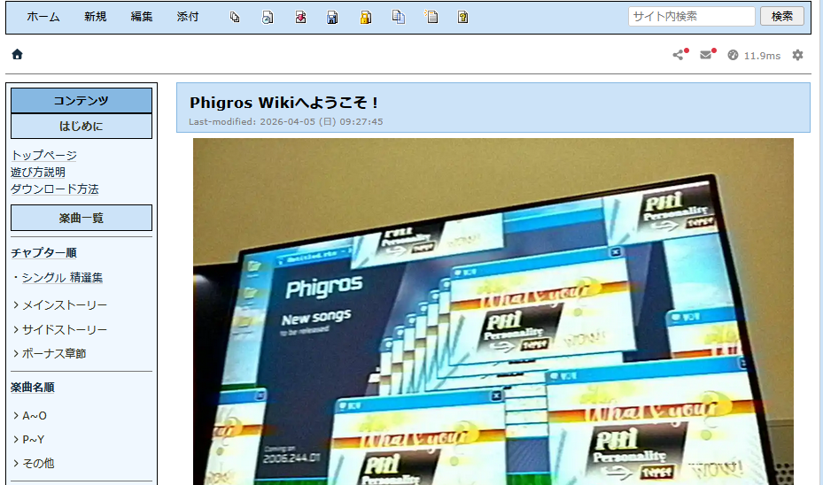
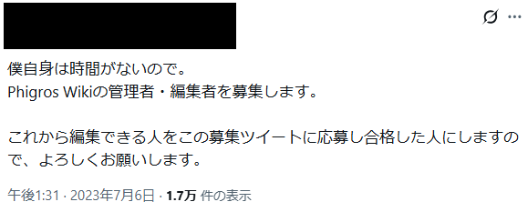
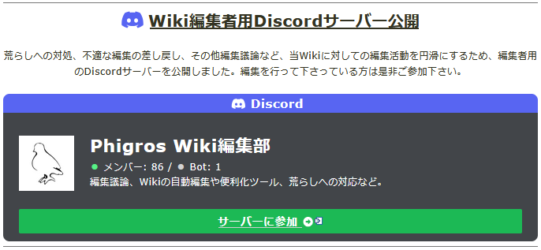

Phigros 攻略wiki

基本情報
- 制作時期
- 大学1年7月～現在
- 役割
- 公認編集部メンバー(副管理者)
- 使用ツール
- WikiWiki、付属マークアップ言語、Discord
- リンク
- Wikiページ
制作のきっかけ
2023年7月、音楽ゲーム『Phigros』の攻略wikiが大規模な荒らし被害に遭い、管理者一人の手には負えない状況に陥りました。
そこで編集部としてwiki編集が可能な人員を限定することとなり、部員の募集と入部テストが行われました。
私は、その時点で別wikiの管理経験が活きると考え、即座に応募。無事に合格を勝ち取り、編集部10人のうちの1人として活動を始めました。
こだわった点・工夫した点
- 編集制限下でもクオリティを維持
- コミュニティの声を反映した体制変更への適応
- 最大瞬間風速を逃さない
編集部発足時は荒らし対策として、編集部メンバーのみが更新可能な制限付き運用を行っていました。限られた人数で最新のアップデート内容を正確かつ迅速に反映させるため、メンバー間での役割分担やDiscordを用いたコミュニケーションを徹底し、サイト全体の利便性向上に努めました。
制限付き運用の開始から1ヶ月半ほどが経過した9月中旬、ゲーム側の大規模アップデートが重なって10人では追いつかない量の編集が必要になり、一般の閲覧者からも不満が出始めました。その頃に編集部内でも「wikiはやはり誰でも参入できる環境であるべき」という意見が出て、編集制限の解除に踏み切ることとなりました。 現在は、一般ユーザーが自由に編集できる環境を維持しつつ、編集部が「新曲の攻略ページ作成」や「権限が必要な管理業務」を担う、ハイブリッドな運営体制を支えています。
私は現在、一般的な編集に加え、編集部員として対応する業務の中で、エイプリルフールの期間限定楽曲の追加に合わせたリアルタイムでのページ作成・編集を担当しています。Phigrosだけでなく音楽ゲーム全体が大いに盛り上がる1日に、「限定楽曲の解禁方法が分からなくて楽しめなかった」「限定楽曲について話したかったのに話せる場がなかった」などという不満を出さぬよう、責任感をもって頑張っています。


振り返り・学び
大規模コミュニティの役に立つ経験をしたことで、多くのユーザーが自分たちの仕事を待っているイメージがつかめました。
また、ここで出会ったメンバーと交流ができたことで、音楽ゲームそのものに対する理解を深めるきっかけにもなったと考えています。